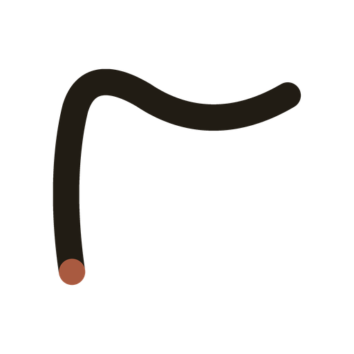
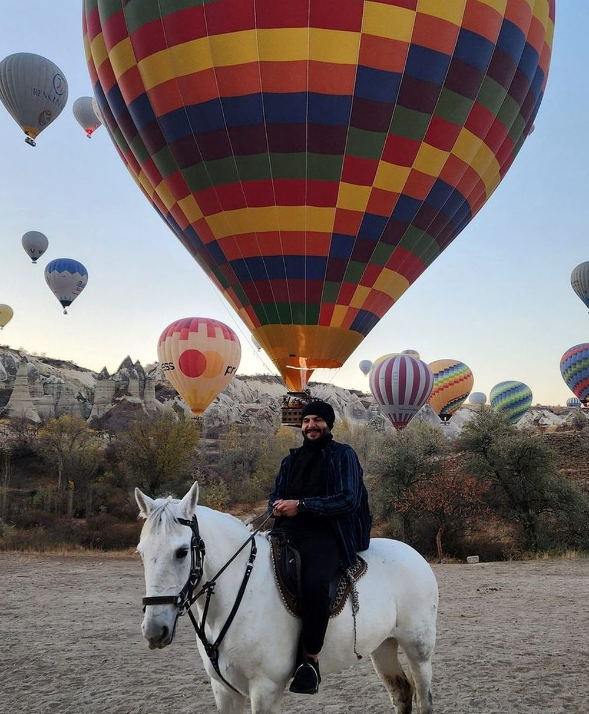
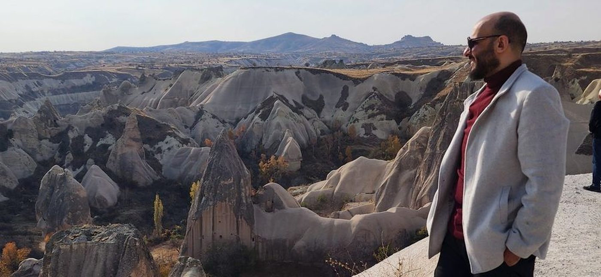
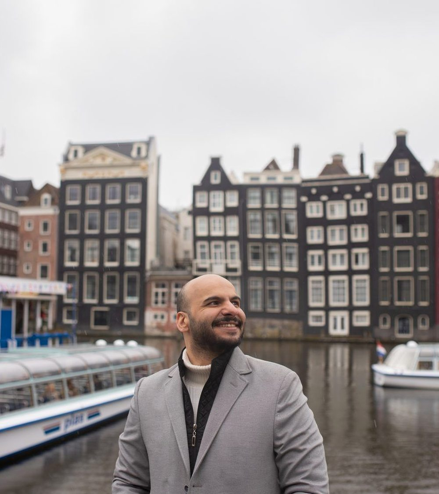
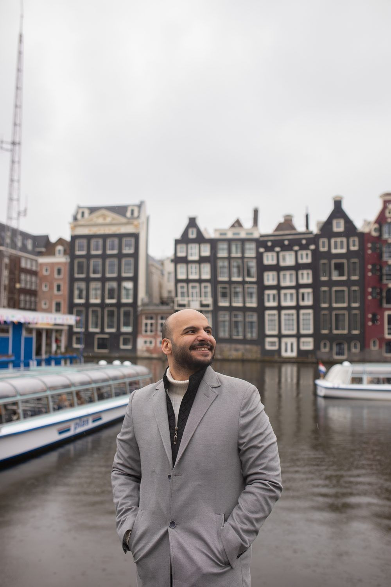
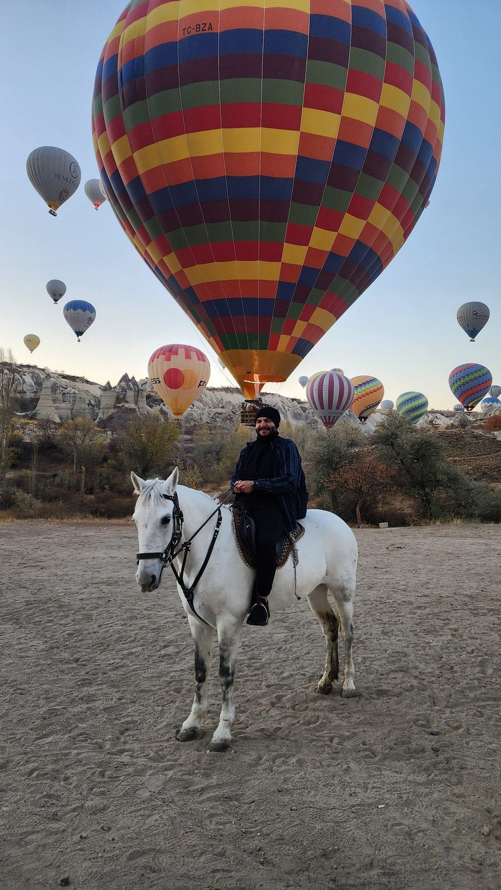

هذه ليست صفحة روابط… هذه بداية فصل جديد. This is not just a link page. It is the beginning of a new chapter.
هذا ليس فيلمًا عن المرض… بل عن اللحظة التي قررتُ فيها أن أبدأ من جديد. Not a film about illness — a film about the moment I chose to begin again.
Featured Documentary · الفيلم الوثائقي
فيلم عن لحظة توقّف… ثم عن محاولة هادئة للعودة. أول فصل وثائقي في مذكرات أحمد.
A film about stopping, breathing, and quietly beginning again — the first chapter of the archive.

Latest Journey · أحدث رحلة
الرحلات هنا لن تكون قوائم أماكن… ستكون ذاكرةً لما بقي بعد العودة: الوجوه، واللحظات، والمعنى.
Not places collected, but life encountered — the memory of what remained after coming home.

The Journal · المذكّرات



أهلاً، أنا أحمد.
أوثّق ما أعيشه… لا لأني أملك الإجابات،
بل لأني أحاول أن أفهم الطريق.
I document what I live, not because I have all the answers, but because I am still trying to understand the road.
— أحمد A Life Being Lived. A Life Being Documented.

للحديث، للتعاون، أو فقط لتقول مرحبًا. For conversations, collaborations, or simply to say hello.